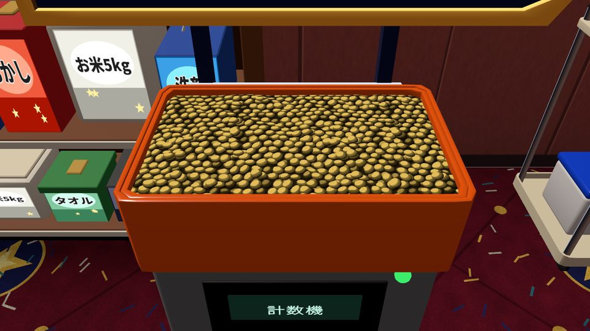
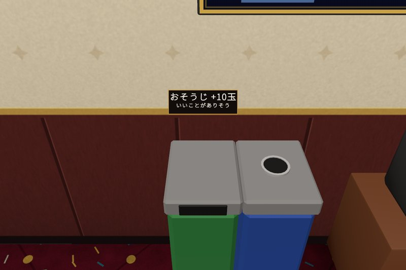
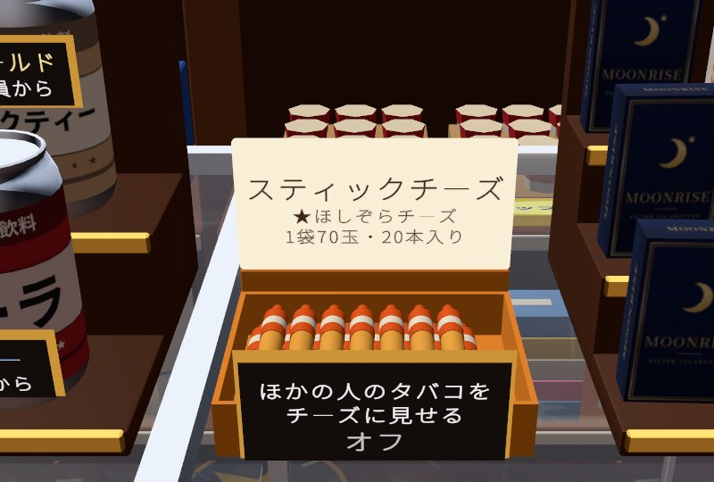
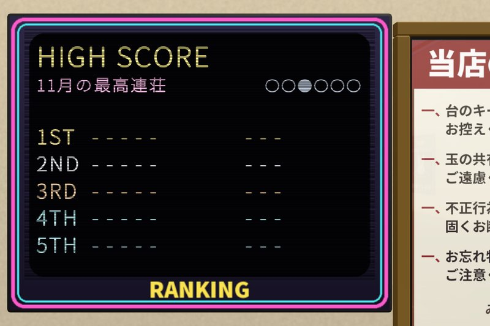

Last modified: 2026-11-23 (Mon)
How the parlor works
Notes on how the parlor works. Machine specs are on each machine's page.
Contents
Floor map

| Where | What's there |
|---|---|
| Center | The machine island. RABBIT HOLE x6 on the front row, STAR PARADE x6 on the back row |
| Left of the entrance | Prize counter, cigarette and drink shelves, counting machine (far end of the counter), coffee wagon (along the west wall) |
| Right of the entrance | Your stats screen, rankings (east wall), and the rest area at the back (status board, TV and trash bins) |
| Above the aisle | LED news board |
| Outside | The mysterious antique dealer, Hoshino Shokai (the shack at the edge of the parking lot, left of the spawn point) |
* You spawn in the parking lot in front of the parlor.
Taking a machine
- Press 打つ (Shoot, the red button on the handle), 玉を借りる (Borrow balls) or 貯玉から出す (Use saved balls) on a free machine to take it. You don't sit down
- If there are balls, it shoots by itself. Strength is automatic too (set to spin the most)
- For PUSH, press the button that appears in front of the dot display
- Balls in the dollar box (ball box) go back to the upper tray by themselves as you shoot
- Walk 2.2 m away and it stops shooting. The machine is kept for you for 5 minutes after you leave (as long as balls are left)
Balls and saved balls
| Borrow balls | 125 balls for 500 Mi (1 ball = 4 Mi) |
|---|---|
| Use saved balls | 125 balls at a time |
| Upper tray | Up to 250 balls. Overflow goes to the lower tray |
| Lower tray | Up to 500 balls. When it's full, "玉を抜いてください" (Please remove the balls) appears. If you don't remove them for 10 s, the balls are removed automatically (lower tray to dollar box) |
| Dollar box | Up to 1,000 balls. Full boxes get stacked (6 stacks of 10 boxes, up to 60) |
* While you wait to remove the balls, balls that don't fit in the lower tray spill onto the floor (up to 100 balls). Spilled balls go to the saved balls of whoever picks them up with "こぼれた玉を拾う" (Pick up spilled balls). Anyone can pick them up.
* If you leave without counting, the balls at your machine go to your saved balls next time you visit.
Counting and prizes
- Press 計数 (Count) on the counting machine to count your balls into saved balls. The dollar box tips over the machine and the balls pour in
- Press 景品に換える (Exchange for prizes) to turn saved balls into prizes. Pick how many big prizes (navy case) and small prizes (red case) with - and +. 全部 (All) takes as many as you can afford
- Balls you don't exchange stay as saved balls. You can use them for cigarettes and drinks too
How many balls a prize costs depends on your member rank.
| Member rank | Big prize | Small prize | Per ball |
|---|---|---|---|
| White | 333 balls | 33 balls | 3 Mi |
| Blue | 313 balls | 31 balls | 3.2 Mi |
| Green | 294 balls | 29 balls | 3.4 Mi |
| Red | 270 balls | 27 balls | 3.7 Mi |
| Gold | 250 balls | 25 balls | 4 Mi |
* Gold finally gets you an even rate: 4 Mi per ball, the same price as borrowing.


* The case colors change with your member rank. White members get navy and red.

The mysterious antique dealer (Hoshino Shokai)

A shack outside, left of the spawn point. For some reason it buys the parlor's prizes. Press 景品を出す (Hand over prizes) at the little window and your prizes are exchanged for Mi. Supposedly it has nothing to do with the parlor.
A big prize is worth 1,000 Mi and a small prize 100 Mi, at every rank.
Making money
You start with 5,000 Mi. Your Mi, saved balls and prizes carry over to your next visit.
| How | What you get | Notes |
|---|---|---|
| Coffee seller | 250 saved balls for 3 cups | 20 s before the next job |
| Trash pickup | 10 balls per can or butt (saved balls) | Plus 1 min 30 s of payout up |
| Daily tasks | 50-125 saved balls (weekly task: 375-625) | 3 a day, 1 a week |
Coffee seller

- Press 売り子を始める (Start selling) on the stand sign at the coffee wagon. A tray appears in your hand (left hand in VR, bottom of the screen on desktop)
- Order cards pop up on the machines. Red cards are hot, blue cards are iced
- Fill the tray with hot coffee from the pot or iced coffee from the pitcher (up to 3 cups)
- Press a card to hand it over. Deliver 3 cups and get 250 saved balls
- 20 s break before the next job


Trash pickup and gifts
- Drop empty cans and cigarette butts over the hole of the trash bins in the rest area. Anyone's trash counts: each can or butt adds 10 saved balls and 1 minute 30 seconds of payout up
- Floor trash appears around the machines every 25-50 s (up to 6)
- Put a drink or cigarette in the drink holder or ashtray of a machine someone else is playing and it becomes a gift. You and the other player both get 1 minute 30 seconds of payout up


Daily tasks

3 a day and 1 a week, picked from this list.
- Spin a machine 100 times
- Hit 1 jackpot
- Count balls at the counting machine
- Exchange balls for prizes
- Take prizes to the mysterious antique dealer
- Deliver 1 coffee
- Throw away 3 empty cans
- Smoke 1 cigarette
Cigarettes and drinks
Exchange saved balls for them and use them at your machine to get payout up. Hoshizora Cheese sticks work the same way as cigarettes.
In this section
| Cigarettes | Hoshizora Cheese | Drinks | |
|---|---|---|---|
| Price | 70 saved balls for a pack of 20 | 70 saved balls for a bag of 20 | 300 saved balls for a case of 12 |
| Take out | Press the machine's ashtray for 1 | Press the drink holder in front of the ashtray for 1 | |
| Use | Hold and use to light it | Hold and use to unwrap it | Hold and use to open it |
| Bring to mouth | Smoke. About 10 puffs burns it down near the filter | Bite. About 15 bites to finish | Drink. Empty after 8 sips |
| Payout up | While lit | While eating | While open with drink left |
| Just holding it | Burns out in 4 min without smoking | Cleared after 4 min without eating | Empty 4 min after opening |
Buying and brands
- Cigarettes are on the shelf above the prize counter's showcase. Press a brand's column for 1 pack of that brand. The red "タバコに換える" (Exchange for cigarettes) button buys the brand you bought last
- Hoshizora Cheese is the box between the cigarette shelf and the drink rack. Available from White members up
- Drinks are on the drink rack at the same counter. Press a sample can for 1 case of that kind. The case shows up in front of the rack for 4 s
- Not enough saved balls shows "貯玉が足りません" (not enough saved balls). How many you have of each brand carries over to your next visit
More brands open up as your member rank goes up. Locked items are still on the shelf with a sign like "ブルー会員から" (Blue members and up). Press one and it tells you something like "AURUM is for Gold members". Drinks you already have can be taken out at any rank.
| Member rank | Cigarettes | Drinks |
|---|---|---|
| White | MOONRISE, CORAL | Orange, green tea |
| Blue | MINT LEAF | Cola |
| Green | COMET | Soda |
| Red | SCARLET | Coffee |
| Gold | AURUM | Milk tea |

Taking one out
- Press the ashtray and one comes out of your stock into the ashtray's slot. The ashtray holds 1 at a time
- Press the drink holder and a can comes out and stands in it. Nothing comes out while a can is already standing there
- You get the brand you bought last. For drinks, when that kind runs out you get one of the other kinds you have
- How many you have left shows above the ashtray for 3.5 s. With none left it says to buy more at the counter
- Up to 16 cigarettes and 16 cans can be out in the parlor at once
Using them
| VR | Desktop | |
|---|---|---|
| Smoking | Bring the filter within 5.5 cm of your mouth | Hold and use to bring it to your mouth |
| Ash | Ash grows past the tip and falls off at 1.6 cm. In VR you can use it to tap the ash off | |
| Drinking | Bring the lid within 8 cm of your mouth and tilt. 25° when full, up to 70° as it gets empty | Hold and use to bring it up to the right corner of your mouth (1 s per sip) |
| Eating cheese | Hold and bring it up like a cigarette. Each bite makes it shorter | |


How long things last
| Situation | Gone after |
|---|---|
| Lit cigarette left in the ashtray | Goes out after 90 s, and the butt disappears 25 s later |
| Unlit cigarette left in the ashtray | 2 min |
| Cigarette dropped on the floor | Goes out after 90 s, gone 5 min after it was dropped |
| Cheese left lying around | 90 s |
| Opened can | Empty after 4 min even if you don't drink |
| Empty can in the drink holder | 20 s (press the holder to clear it and get the next can) |
| Empty can on the floor | 5 min |
| Unopened can left out | 10 min in the holder, 3 min elsewhere. It goes back to the owner's stock |
Effects
Whether you're holding it or it's sitting in the ashtray or holder, each attacker count pays 1 extra ball (payout up). Higher-rank brands keep the payout up going for a while after you finish.
| Brand rank | Lasts after you finish |
|---|---|
| White (and Hoshizora Cheese) | 0 s |
| Blue | 23 s |
| Green | 45 s |
| Red | 68 s |
| Gold | 90 s |
They also tie into the occult (Occult).
- ① Lighting a cigarette gives x1.08 for 90 s. Unwrapping a cheese stick counts as ① too
- ⑤ While a can stands in this machine's drink holder, x1.08. Your own can or one someone left for you both count
Gifts
- Put a drink or cigarette in the drink holder or ashtray of a machine someone else is playing and it's a gift. Cheese works too
- Both the giver and the receiver get 1 minute 30 seconds of payout up (stacks up to 7 minutes 30 seconds)
- The giver's ashtray shows "差し入れ" (gift), and the receiver's shows "〇〇さんから ジュースの差し入れ" (a drink from so-and-so)
- The giver can get the effect once every 20 s, the receiver once every 10 s
Throwing trash away
- Let go of empty cans and butts over the hole of the trash bins in the rest area. Within 26 cm sideways of the hole's center, and from 35 cm below to 1 m above the hole, it goes in. Things resting on the lid count too
- Anyone's trash counts, including your own: 10 saved balls each and 1 minute 30 seconds of payout up (stacks up to 7 minutes 30 seconds)
- Wait 6 s between rewards. Cans with drink left, unopened cans and lit cigarettes give nothing
- Floor trash appears around the machines every 25-50 s (up to 6, see Trash pickup)
Trivia
- The sign in front of the cheese box, "ほかの人のタバコをチーズに見せる" (show other people's cigarettes as cheese), toggles on and off. While it's on, other people's cigarettes and butts look like cheese sticks, with no fire, smoke or ash. Only on your screen
- Cheese has no fire, smoke, ash or lighter sound. Unwrapping goes "piri", biting goes "mogu"
- A cigarette glows brighter while you puff and you exhale smoke a moment after you lower it. Each puff takes 4-5 mm off
- You can see the drink's surface through the can opening, and it drops as you drink. The color matches the kind of drink
- Nobody can take what you're holding. Things you set down can be taken

Payout up and occult
Payout up
Each attacker count pays 1 extra ball.
* The times on this page are for White members. Member rank makes them longer (Blue x1.1, Green x1.2, Red x1.35, Gold x1.5). The times for occult ①, ③ and ④ scale the same way.
| When | How long |
|---|---|
| Holding or setting down an open drink | While it lasts |
| Holding or setting down a lit cigarette | While it lasts |
| Throwing away 1 piece of trash | 1 min 30 s (stacks up to 7 min 30 s) |
| Giving or receiving a gift | 1 min 30 s (stacks up to 7 min 30 s) |
Occult
Pachinko superstitions that actually work here. In normal mode on your own machine only, the jackpot odds go up a little, up to x1.3 combined. No effect plays when they kick in.
| No. | Condition | Odds |
|---|---|---|
| ① | 90 s after lighting a cigarette | x1.08 |
| ② | The next 5 holds after coming back to a kept machine after 20 s or more | x1.10 |
| ③ | 90 s after the machine next to yours in the same row hits a jackpot | x1.08 |
| ④ | 45 s after borrowing balls | x1.05 |
| ⑤ | A can is standing in this machine's holder (yours, or one someone left for you) | x1.08 |
Players in the instance
The more people in the instance, the more often balls go into the heso (up to +15%).
* Your active buffs show under your Mi at the bottom left of the screen (for example: 出玉UP 3:10 ①④当たり×1.13 人数で回り+9%, which means payout up for 3:10, occult ①④ at x1.13, and +9% spins from the player count).
Member ranks
Your rank goes up with the most Mi you have ever held at once. It never goes down.
| Rank | Highest Mi held | Value per ball | Ball color | Card pattern |
|---|---|---|---|---|
| White | 0 | 3 Mi | Silver | Thin diagonal lines |
| Blue | 50,000 Mi | 3.2 Mi | Blue silver | Waves |
| Green | 150,000 Mi | 3.4 Mi | Green silver | Dots |
| Red | 400,000 Mi | 3.7 Mi | Red silver | Thick stripes |
| Gold | 1,000,000 Mi | 4 Mi | Gold | Ripples and stars |
- The value per ball comes from how many balls a prize costs at the counting machine (Counting and prizes). Gold gets the even rate (4 Mi, the same as borrowing)
- The prize case colors and the cigarette and drink brands change with your rank too (brand table)
- The payout up and occult times get longer too (Blue x1.1, Green x1.2, Red x1.35, Gold x1.5, Payout up and occult)
- Your screen shows how far you are from the next rank, like "ブルーまであと12,300Mi" (12,300 Mi to Blue)


Stats, rankings and displays
| Your stats | Spins, jackpots, best streak, ichigeki, spent, won back and net. Switches with daily tasks every 8 s |
|---|---|
| Rankings | 6 pages: this month's net, ichigeki and best streak, plus Mi held, all-time ichigeki and best streak. The monthly pages reset each month |
| LED news board | When someone hits a jackpot it scrolls something like "〇〇さんが7番台のRABBIT HOLEで大当り" (so-and-so hit a jackpot on RABBIT HOLE #7) |
| Status board and TV | In the rest area. Jackpots, streak, starts and state for all 12 machines, plus a camera that cycles through the machines being played |
* Ichigeki is the most balls paid out by the attacker in one streak.


On-screen display

Shows your member card and rank, Mi, saved balls and the balls at your machine. On desktop and mobile it's at the bottom left of the screen. In VR, look at your left wrist. Toggle it with the sign under your stats screen.
Your member card, rank, Mi and balls also show in small print next to your avatar's head, so other people can see them.